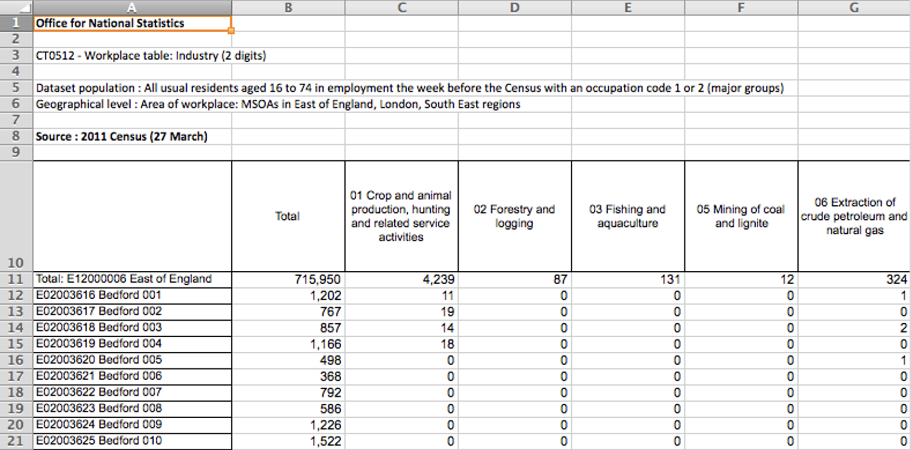
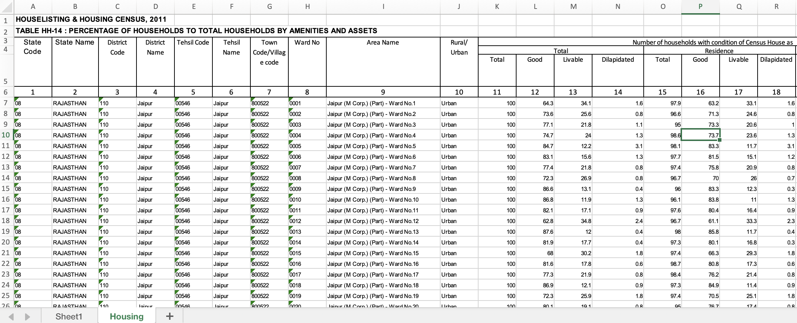

city,famous_for,sequence
Jaipur,Amber Fort,4
Delhi,Taj Mahal,1
Agra,Agra Fort,2
Ranthambore,Tigers!,3Think Data
Jon Reades
Which of These is Data?
| city | famous_for | sequence | |
|---|---|---|---|
| 0 | Jaipur | Amber Fort | 4 |
| 1 | Delhi | Taj Mahal | 1 |
| 2 | Agra | Agra Fort | 2 |
| 3 | Ranthambore | Tigers! | 3 |
Why This Isn’t Easy
With Labels

How About in India?
From Files to Data
In order to read a file you need to know a few things:
- What distinguishes one record from another?
- What distinguishes one field from another?
- What ensures that a field or record is valid?
- Does the data have row or column names?
- Is there metadata?
Structure of a Tabular Data File
Row and column names (indexes) make it a lot easier to find and refer to data but they are not data and don’t belong in the data set itself.
Often, one record (a.k.a. observation) finishes and the next one starts with a ‘newline’ (\n) or ‘carriage return’ (\r) or both (\r\n) but it could be anything (e.g. EOR).
Often, one field (a.k.a. attribute or value) finishes and the next one starts with a comma (,), but it could be anything (e.g. ; or | or EOF).
Some Common Formats
| Extension | Field Separator | Record Separator | Python Package |
|---|---|---|---|
.csv |
, but separator can appear in fields enclosed by ". |
\n but could be \r or \r\n. |
csv |
.tsv or .tab |
\t and unlikely to appear in fields. |
\n but could be \r or \r\n. |
csv (!) |
.xls or .xlsx |
Binary, you need a library to read. | Binary, you need a library to read. | xlrd/xlsxwriter |
.sav or .sas |
Binary, you need a library to read. | Binary, you need a library to read. | pyreadstat |
.json, .geojson |
Complex (,, [], {}), but plain text. |
Complex (,, [], {}), but plain text |
json, geojson |
.shp |
Binary, you need a library to read. Need at least 3 parts (shp,dbf,shx)! |
Binary, you need a library to read. | geopandas, fiona |
.feather |
Binary, you need a library to read. | Binary, you need a library to read. | pyarrow, geofeather |
.parquet |
Binary, you need a library to read. | Binary, you need a library to read. | pyarrow |
Don’t Reinvent the Wheel
Reading data is a very common challenge so… there is a package or class for that! You don’t need to tell Python how to read Excel files, SQL files, web pages… find a package that does it for you!
‘Mapping’ Data Types
You will often hear the term ‘mapping’ used in connection to data that is not spatial, what do they mean?
Here’s a mapping:
| Input (e.g. Excel) | Output (e.g. Python) |
|---|---|
| NULL, N/A, “” | None or np.nan |
| 0..n | int |
| 0.00…n | float |
| True/False, Y/N, 1/0 | bool |
| R, G, B (etc.) | int or str (technically a set, but hard to use with data sets) |
| ‘Jon Reades’, ‘Huanfa Chen’, etc. | str |
| ‘3-FEB-2020’, ‘10/25/20’, etc. | datetime module (date, datetime or time) |
Testing, Testing
You should never assume that the data matches the spec.
Things That Can Go Wrong…
A selection of real issues I’ve seen in my life:
- Truncation: server ran out of diskspace or memory, or a file transfer was interrupted.
- Translation: headers don’t line up with data.
- Swapping: column order differs from spec.
- Incompleteness: range of real values differs from spec.
- Corruption: field delimitters included in field values.
- Errors: data entry errors resulted in incorrect values or the spec is downright wrong.
- Irrelevance: fields that simply aren’t relevant to your analysis.
Is Geo-Data Any Different?
- Yes if you are using ESRI’s Shapefiles.
- No if you are using any other format.
Geo-Data Tables
| Id | AREA | Ward_No | POP | DENS_PPH | NAME | geometry | Area | Ward_Numbe | |
|---|---|---|---|---|---|---|---|---|---|
| 0 | 0 | 781.0 | 99.0 | 12356 | 16 | ADARSH NAGAR | POLYGON ((588147.873 2977077.51, 588066.155 29... | NaN | NaN |
| 1 | 0 | 234.0 | 76.0 | 14120 | 60 | ADARSH NAGAR | MULTIPOLYGON (((585516.609 2980880.352, 585516... | NaN | NaN |
| 2 | 0 | 18.0 | 77.0 | 13879 | 771 | ADARSH NAGAR | POLYGON ((583885.577 2978737.637, 583942.867 2... | NaN | NaN |
Plotting from Python
Resources
Think Data • Jon Reades